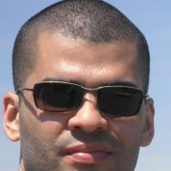
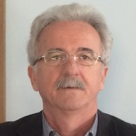
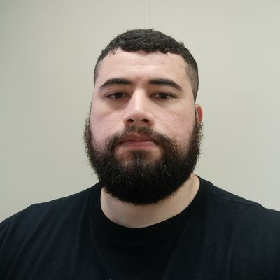
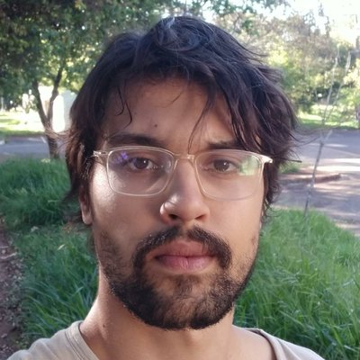
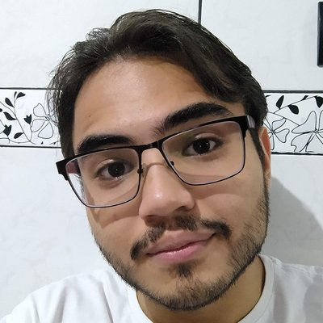
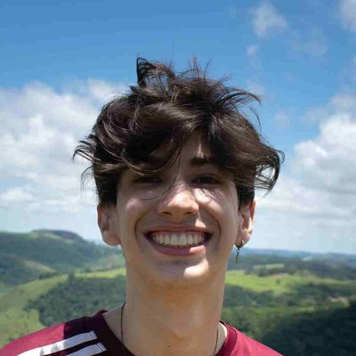

Grupo de Física dos Fluidos Complexos
Complex Fluids Physics Group

Cristais líquidos, interfaces e materiais moles: modelagem, simulação e experimentos. Liquid crystals, interfaces and soft materials: modeling, simulation and experiments.
Sobre o grupoAbout the group
Fluidos complexos são materiais que não se encaixam bem na divisão clássica entre sólidos, líquidos e gases. Eles ocupam um território intermediário: escoam como líquidos, mas guardam estrutura, memória ou ordem que lembram a dos sólidos. Muitos dos materiais que usamos no dia a dia pertencem a essa classe, como tintas, géis, espumas, emulsões, polímeros, soluções iônicas, fluidos biológicos e os cristais líquidos das telas de TVs e celulares.
O que une materiais tão diferentes é a escala em que a física acontece. Em fluidos complexos, o comportamento observado em escala macroscópica é determinado por estruturas muito maiores que átomos e moléculas isoladas, como agregados, cadeias, gotas e domínios ordenados. Pequenas mudanças na forma dessas estruturas, ou na maneira como elas interagem entre si e com as superfícies, podem alterar profundamente as propriedades do material, e é isso que torna esses sistemas ao mesmo tempo difíceis de descrever e tão ricos do ponto de vista tecnológico.
Nosso grupo estuda esses sistemas combinando modelagem, simulação e experimentos, com o objetivo de entender os mecanismos por trás de seu comportamento e de usar esse conhecimento no desenvolvimento de novos materiais e dispositivos.
Complex fluids are materials that do not fit neatly into the classical division between solids, liquids and gases. They occupy an intermediate ground: they flow like liquids, yet retain structure, memory or order reminiscent of solids. Many materials we use every day belong to this class, such as inks, gels, foams, emulsions, polymers, ionic solutions, biological fluids and the liquid crystals in TV and phone displays.
What unites such different materials is the scale at which the physics takes place. In complex fluids, the macroscopic behavior is determined by structures much larger than individual atoms and molecules, such as aggregates, chains, droplets and ordered domains. Small changes in the shape of these structures, or in how they interact with one another and with surfaces, can profoundly alter the properties of the material. This is what makes these systems both hard to describe and technologically rich.
Our group studies these systems by combining modeling, simulation and experiments, aiming to understand the mechanisms behind their behavior and to use this knowledge in the development of new materials and devices.
Linhas de pesquisaResearch lines
Cristais líquidosLiquid crystals
Fases nemáticas, colestéricas e outras fases ordenadas: estrutura, elasticidade, textura e resposta a campos externos.Nematic, cholesteric and other ordered phases: structure, elasticity, texture and response to external fields.
Molhamento e interfacesWetting and interfaces
Comportamento de fluidos complexos junto a superfícies e interfaces, incluindo transições de molhamento.Behavior of complex fluids near surfaces and interfaces, including wetting transitions.
Desenvolvimento de displaysDisplay development
Materiais e dispositivos baseados em cristais líquidos para aplicações em displays.Liquid-crystal-based materials and devices for display applications.
Espectroscopia de impedânciaImpedance spectroscopy
Caracterização elétrica de células e interfaces, e modelos de transporte de cargas.Electrical characterization of cells and interfaces, and charge transport models.
Aprendizado de máquinaMachine learning
Métodos de aprendizado de máquina aplicados a fluidos complexos.Machine learning methods applied to complex fluids.
MembrosMembers
ProfessoresFaculty




EstudantesStudents




Iniciação científicaUndergraduate research

Iniciação científica (ensino médio)High-school research
PublicaçõesPublications
Trabalhos do grupo. A lista completa de cada professor está no Google Scholar, em sua página individual.Works of the group. Each professor's complete list is on Google Scholar, linked from their individual page.
-
Physical Review E 113(4), 045414 · 2026
-
Physical Review E 113(3), 035403 · 2026
-
Advanced Functional Materials 36(30), e28997 · 2026
-
Chaos: An Interdisciplinary Journal of Nonlinear Science 35(2) · 2025
-
Quantum Reports 7(2), 20 · 2025
-
Chaos: An Interdisciplinary Journal of Nonlinear Science 35(2) · 2025
Ver todas as publicações (105 artigos)See all publications (105 articles)
Últimas notíciasLatest news
ContatoContact
Departamento de Física, Universidade Tecnológica Federal do Paraná (UTFPR), câmpus Apucarana
Departamento de Física, Universidade Estadual de Maringá (UEM)
Department of Physics, Federal University of Technology – Paraná (UTFPR), Apucarana campus
Department of Physics, State University of Maringá (UEM)
E-mail:E-mail: rzola@utfpr.edu.br